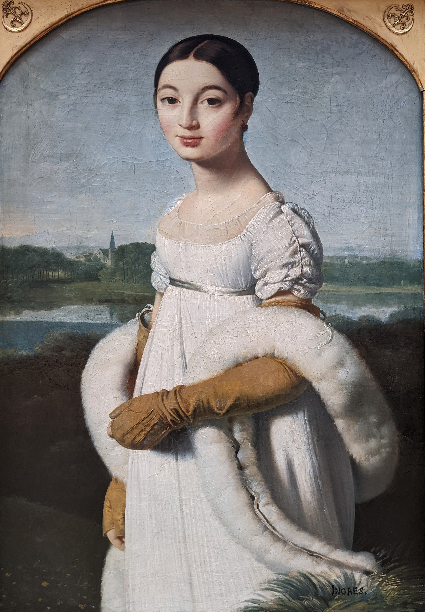
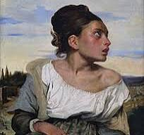
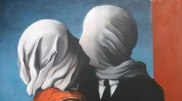

Visita
Te mostramos la ubicacion exacta de nuestras instalaciones
Sala -1

Autor: Jean-Auguste-Dominique Ingres
Año: 1845
Contexto histórico:
Fue pintada durante el periodo romántico, aunque Ingres seguía un estilo neoclásico muy detallado. Esta obra refleja la elegancia y el ideal femenino de la aristocracia francesa de la época.

Autor: Jean-Baptiste Camille Corot
Año: circa 1843
Contexto histórico:
Corot pintó esta obra durante el periodo romántico, destacando la figura femenina con una mirada introspectiva. Refleja el interés de la época por lo exótico y lo rural, alejándose de los retratos aristocráticos tradicionales.

Autor: Hyacinthe Rigaud
Año: 1701
Contexto histórico:
Este retrato oficial fue encargado para mostrar el poder absoluto del rey Luis XIV de Francia. Es un ejemplo del arte barroco al servicio de la monarquía, destacando el lujo, la autoridad y la majestuosidad del “Rey Sol”.

Autor: Hippolyte Flandrin
Año: 1836
Contexto histórico:
Perteneciente al periodo neoclásico, esta pintura transmite introspección y melancolía. Su estilo sereno y la figura idealizada reflejan los valores académicos de la época y la influencia de su maestro Ingres.

Autor: René Magritte
Año: 1928
Contexto histórico:
Perteneciente al surrealismo, esta obra representa el misterio del deseo y la incomunicación. Magritte cuestiona la realidad y los vínculos humanos al cubrir los rostros de los amantes, sugiriendo la imposibilidad de una conexión total.

Autor: Johannes Vermeer
Año: ca. 1665
Contexto histórico:
Considerada una de las obras maestras del Barroco holandés, esta pintura destaca por su intimidad, la luz suave y la expresión serena de la joven. Se ha llamado "la Mona Lisa del norte" por su misterio y belleza.

Autor: Albrecht Dürer
Año: 1513
Contexto histórico:
Obra clave del Renacimiento alemán, representa la firmeza moral frente a las tentaciones y la muerte. El caballero avanza con determinación, ignorando el miedo y el mal, reflejando ideales cristianos y humanistas.

Autor: Jan van Eyck
Año: ca. 1435
Contexto histórico:
Este óleo flamenco del Renacimiento temprano muestra al canciller Rolin en oración frente a la Virgen María. Van Eyck combina simbolismo religioso, atención al detalle y perspectiva en una composición llena de riqueza visual.
Te mostramos la ubicacion exacta de nuestras instalaciones